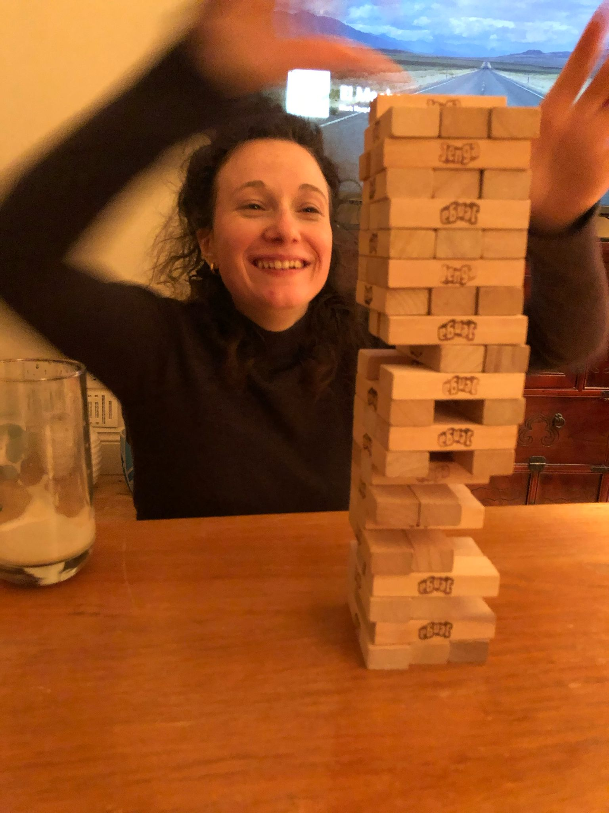

🏺
sculpture
Raw clay and dried flowers — the materia botanica series, exploring fragility, preservation and the transformation of nature.
The word factotum comes from the Medieval Latin fac totum — "do everything." It describes someone versatile and adaptable, willing to explore a wide range of manual work. This is that attitude, applied to arts and crafts.

I'm a visual artist driven by the endless possibilities of creative exploration. Throughout my journey I've moved between mediums — drawing, mixing fine lines and watercolours, is how I started. In 2020 I began clay sculpting, shaping raw materials and mixing dried clay with flowers.
For me this project is about venturing into the unknown, embracing uncertainty, and discovering beauty in unexpected places. The curiosity of exploring more mediums and materials creates a powerful journey.
Through my work I seek a meditative state of mind — a safe space of relaxation where there's no possibility of error, because every stroke is telling a story, and there are no perfect stories.
the errors are the most interesting part of a painting or a sculpture — what breathes life into them, just as they do in us.on imperfection
Raw clay and dried flowers — the materia botanica series, exploring fragility, preservation and the transformation of nature.
Where it all began: fine ink lines woven with watercolour washes, each piece dated like a page from a diary.
The next chapter — a new medium taking shape, in the same spirit of slow, curious exploration.
Bring your curiosity to a workshop — no experience, and no perfect results, required.
see the workshops